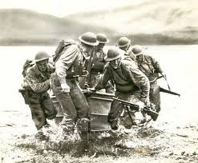
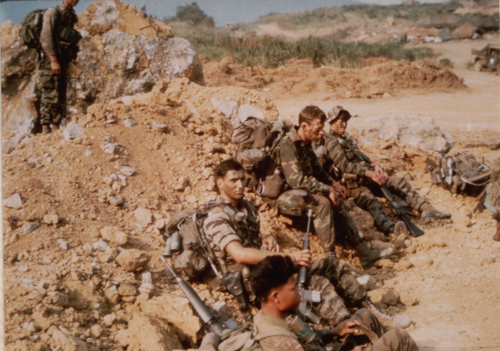

From Colonial Times and our nation's birth to the beaches of Normandy during World War II to the Global War on Terrorism, Rangers have been fighting in conflicts as a special operations force, although not recognized as one until the creation of the 1st Ranger Battalion during WWII.
Rangers of the 1st Ranger Battalion during a training exercise, circa. 1942

Ceremony of the 1st graduates of the newly created Ranger School course of the U.S. Army, circa. November, 1950
Vietnam Rangers awaiting a Khe Sanh patrol during Operation Pegasus, circa. April, 1968

Rangers of the Modern day 75th Ranger Regiment during a Chilean Army competition, in which they took home gold, circa. September, 2009
The 75th Ranger Regiment is one of America's most elite special operations groups under the command of USASOC (United States Army Special Operations Command) and JSOC (Joint Special Operations Command). Under this text are a few links that go more in depth in regards to their training, mission, and some books that go into detail about the 75th and RASP (Ranger Assessment and Selection Program) 1 and 2, and what the differences are between RASP and Ranger School.